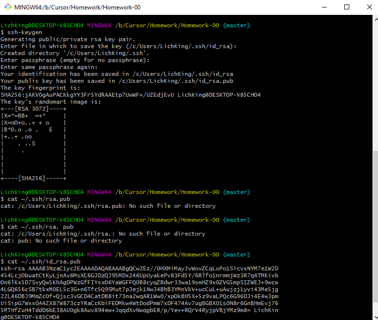

Git-шпаргалки
Base
- "git config --global user.name blabla" - задає глобальний юзернейм;
- "git config --global user.email blabal@bla" - задає глобальний емейл;
- "git init" - ініціалізує git у папці;
- "git status" - відображає статус файлів у робочому каталозі і індексі, які файли було змінено але не додано
у індекс;
- "git add" - додає вміст робочого каталогу у індекс;
- "git commit" - команда для запису індексованих змін в репозиторій;
- "git log" - відображає коміти, зроблені в репозиторії в зворотному до хронологічного порядку;
- "git checkout" - використовується для копіювання файлів з історії в робочу директорію. Також вона може
використовуватися для перемикання між гілками;
- "git branch" - команда для управління гілками в репозиторії;
- "git push" - використовується для вивантаження вмісту локального сховища в віддалений репозиторій;
- "git pull" - стягує всі зміни з віддаленого репозиторію до нашого робочого каталогу;
- "git merge" - об'єднує кілька послідовностей комітів в загальну історію. Найчастіше за допомогою команди git
merge об'єднують дві гілки;
- "git clone" - команда для вибору існуючого сховища та створення його копії;
Що таке .gitignore?
".gitignore" - потрібний для приховання файлів та папок від системи контролю версії Git. Зазвичай приховує файли конфігу, тимчасові файли та папки.
Advanced
- "git revert" - відміна комітів.
- "git reset" - відміна змін та комітів.
- "git rebase" - перенесення змін з одної гілки в іншу.
- "git cherry-pick" - перенесення виділених комітів із одного місця репозиторію в інший.
- "git stash" - призначена для збереження поточних змін в окреме хранилеще.
SSH
